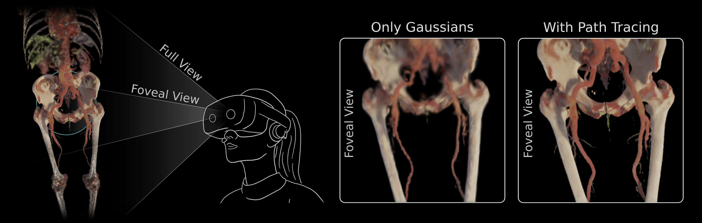
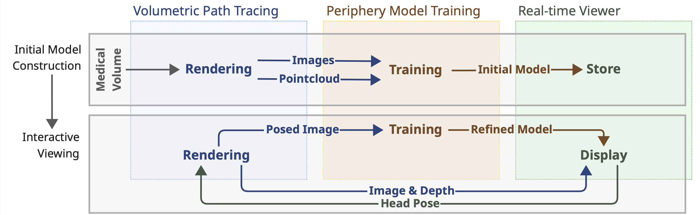

Hybrid Foveated Path Tracing with Peripheral Gaussians for Immersive Anatomy

Demo Video

Abstract
Volumetric medical imaging offers great potential for understanding complex pathologies. Yet, traditional 2D slices provide little support for interpreting spatial relationships, forcing users to mentally reconstruct anatomy into three dimensions. Direct volumetric path tracing and VR rendering can improve perception but are computationally expensive, while precomputed representations, like Gaussian Splatting, require planning ahead. Both approaches limit interactive use.
We propose a hybrid rendering approach for high-quality, interactive, and immersive anatomical visualization. Our method combines streamed foveated path tracing with a lightweight Gaussian Splatting approximation of the periphery. The peripheral model generation is optimized with volume data and continuously refined using foveal renderings, enabling interactive updates. Depth-guided reprojection further improves robustness to latency and allows users to balance fidelity with refresh rate.
We compare our method against direct path tracing and Gaussian Splatting. Our results highlight how their combination can preserve strengths in visual quality while re-generating the peripheral model in under a second, eliminating extensive preprocessing and approximations. This opens new options for interactive medical visualization.
Process Overview

Citation
@misc{kleinbeck_hybrid_2026,
title = {Hybrid Foveated Path Tracing with Peripheral Gaussians for Immersive Anatomy},
url = {http://arxiv.org/abs/2601.22026},
doi = {10.48550/arXiv.2601.22026},
number = {{arXiv}:2601.22026},
publisher = {{arXiv}},
author = {Kleinbeck, Constantin and Theelke, Luisa and Schieber, Hannah and Eck, Ulrich and Eisenhart-Rothe, Rüdiger von and Roth, Daniel},
date = {2026-01-29},
langid = {english},
eprinttype = {arxiv},
eprint = {2601.22026 [cs]},
keywords = {Computer Science - Computer Vision and Pattern Recognition, Computer Science - Graphics},
}